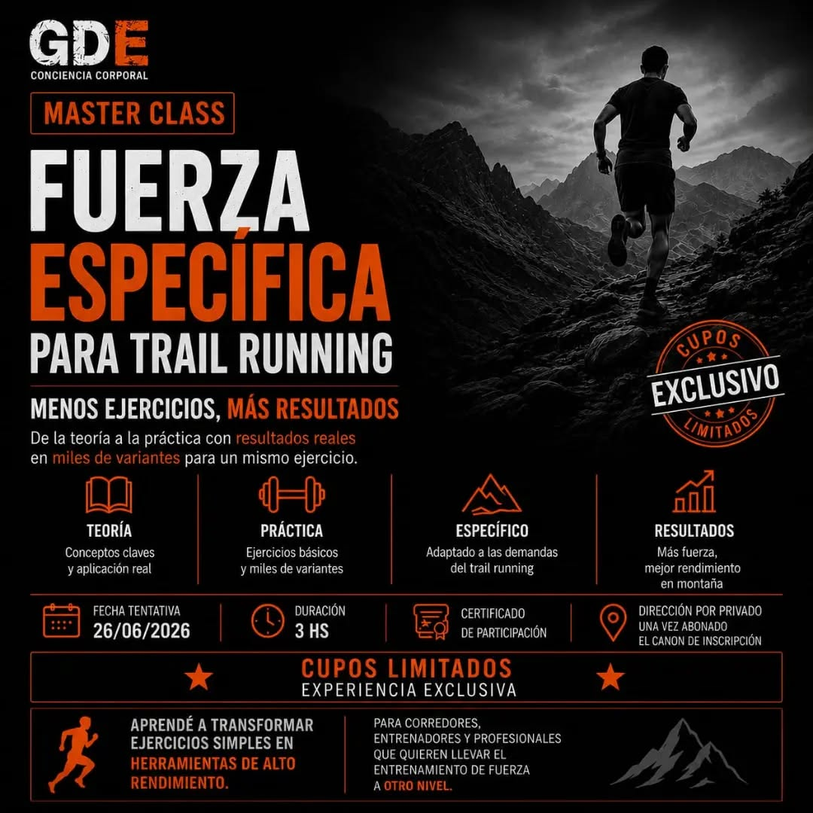
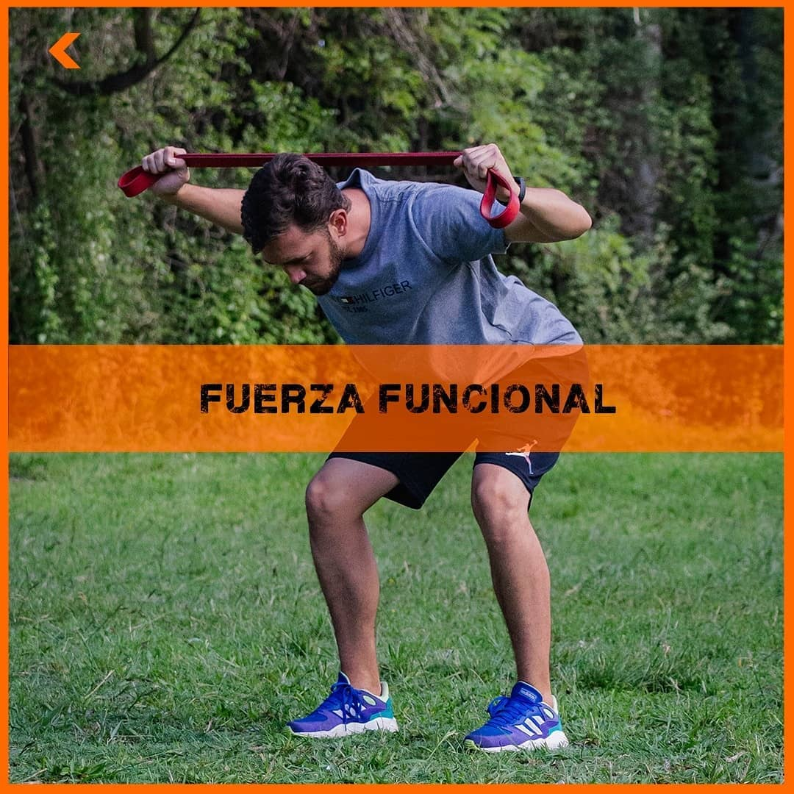
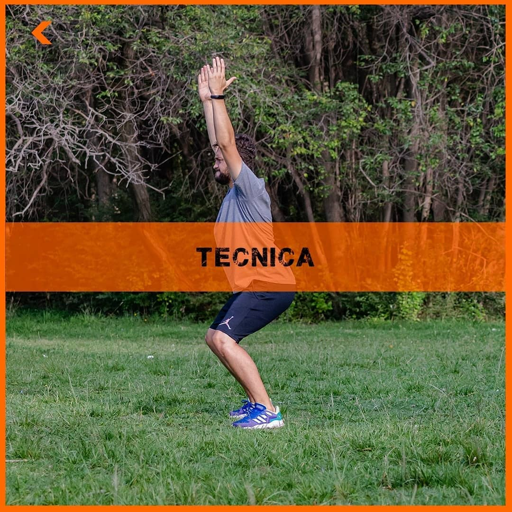

Galería






Preparador físico de trail running. Profesor de Educación Física IEF Mendoza. Metodología propia en fuerza y rendimiento.
3 horas - Certificado de participación - Cupos limitados.


